Oto-elektronik ve ECU programlama
Otomobil elektronik sistemleri, ECU arıza tespiti ve programlama, performans optimizasyonu çalışmaları.
Detaylı sayfaİTÜ ASTeam · Göcen Otoelektronik
Elektronik, yazılım ve robotikle çalışan sistemler kuruyorum: yarışma sualtı araçlarından motor kontrol ünitelerine kadar.
İstanbul · Edirne
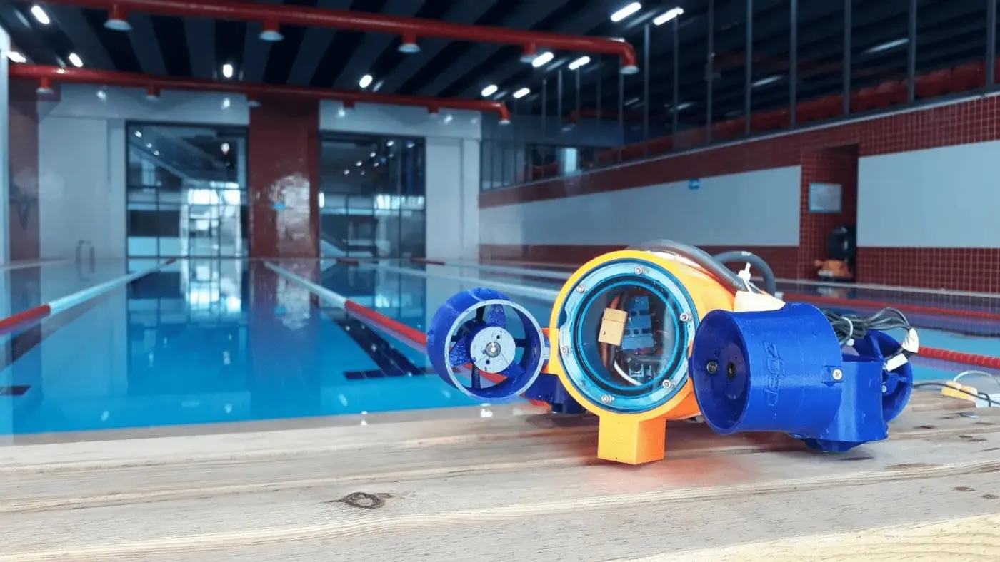
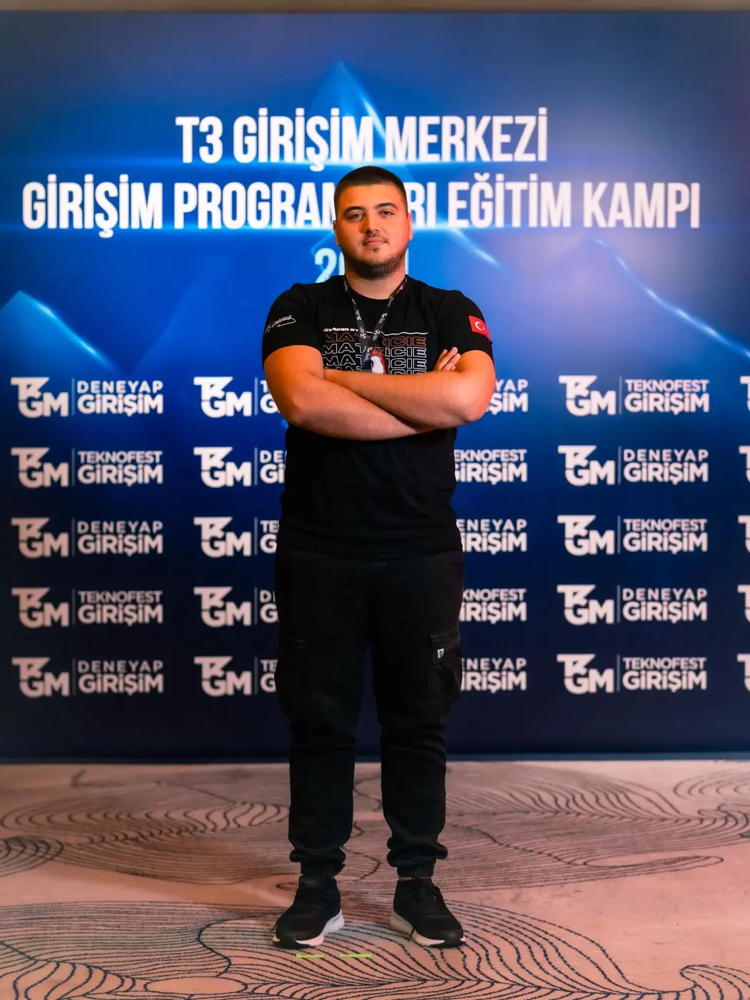
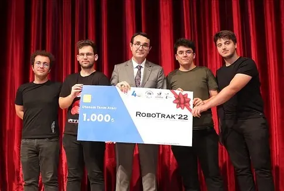
Hakkımda
Elektronik ve yazılım alanlarında lise yıllarından itibaren çalışmalara başladım, 2020'den itibaren robotik yarışmalara katıldım. Yarışma süreçlerinde elektronik devre tasarımı, katı modelleme ve gömülü yazılım alanlarında kendimi geliştirdim.
2022 sonrası hackathon ve girişimcilik alanlarına yöneldim. Bu projelerde web geliştirme, yapay zeka ve görüntü işleme üzerine çalıştım.
Şu anda İTÜ ASTeam'de Yazılım Ekip Lideri olarak otonom sistemler üzerine çalışıyorum. Edirne'de Göcen Otoelektronik'te ECU arıza tespiti ve onarımı yapıyorum.
Projeler
Otomobil elektronik sistemleri, ECU arıza tespiti ve programlama, performans optimizasyonu çalışmaları.
Detaylı sayfa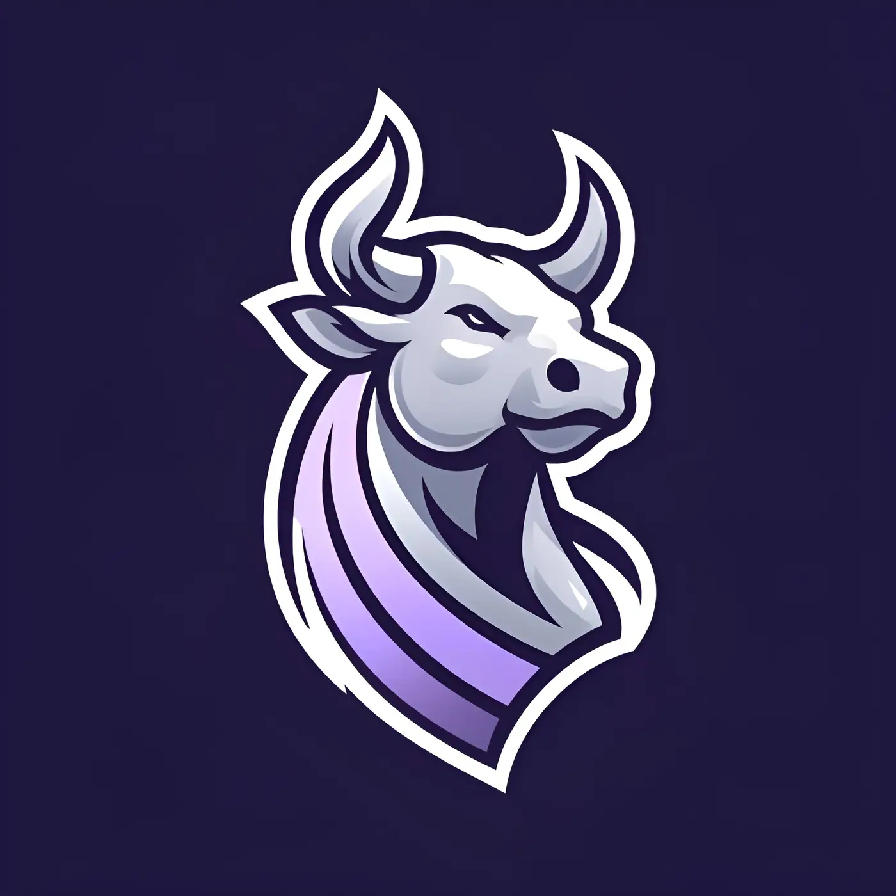
Finansal stratejilerin test edilmesini sağlayan web tabanlı bir SaaS girişimi.
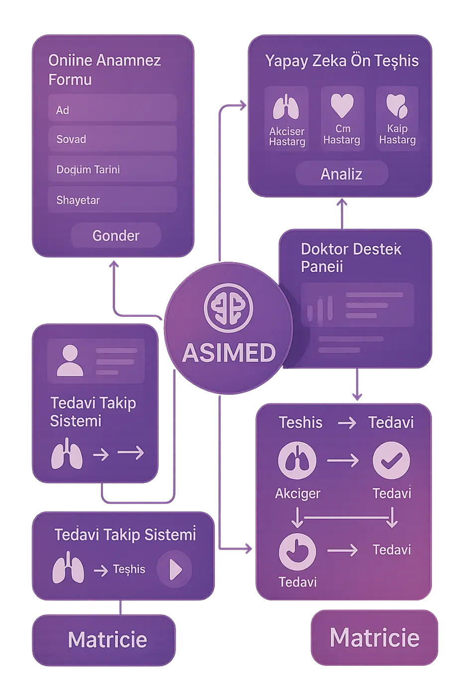
Yapay zeka destekli ön teşhis, online anamnez ve doktor destek ekranları.
Teknofest yarışması için geliştirilen gelişmiş otonom sualtı aracı.
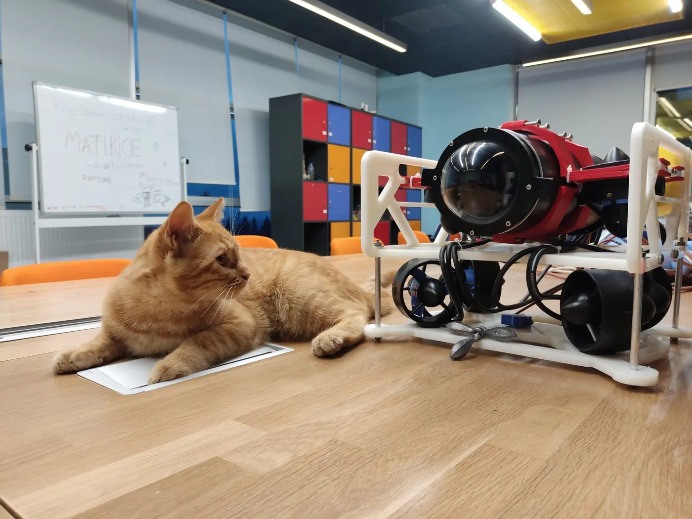
Matiricie takımının ilk otonom sualtı aracı projesi.
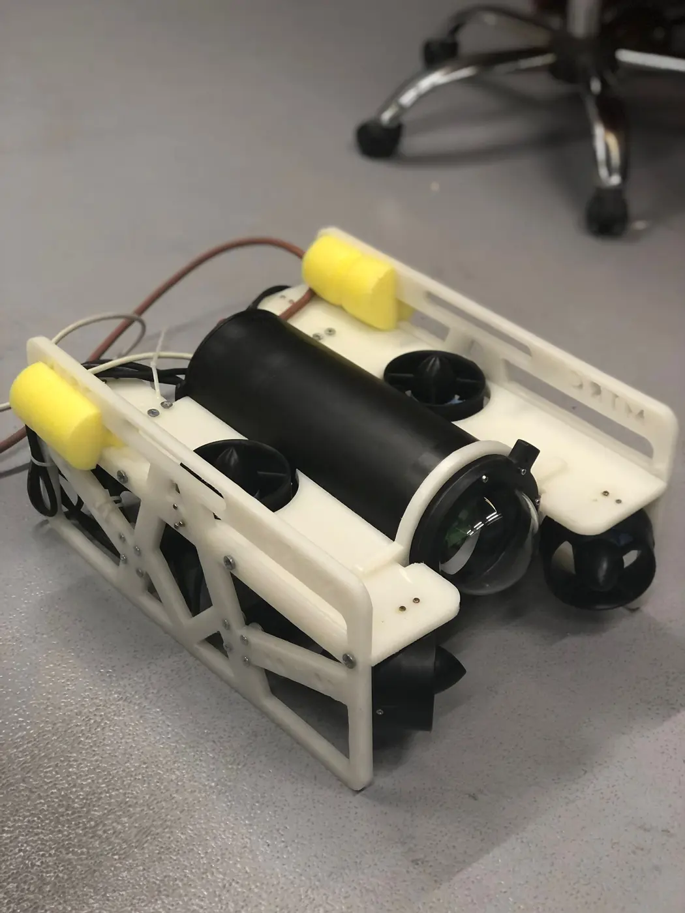
RoboNation RoboSub yarışması için geliştirilen uluslararası düzeyde sualtı aracı.
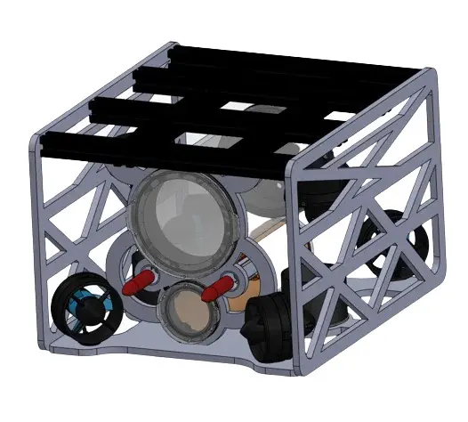
Denizaltı haritalandırma ve keşif için geliştirilen sualtı robotik platformu.
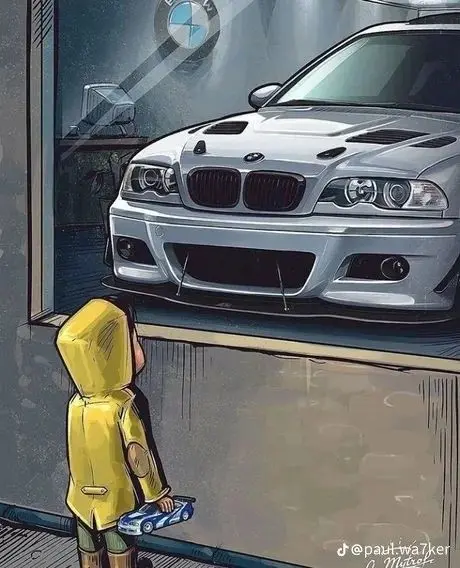
Sahibinden.com verileriyle BMW 3.20D araçlarının fiyatını tahmin eden makine öğrenmesi modeli.
Deneyim
İTÜ ASTeam
Göcen Otoelektronik, Edirne
İTÜ ASTeam
İTÜ Seatech Innovators
Ödüller
AsiFin · Django ve finans yazılımı geliştirici
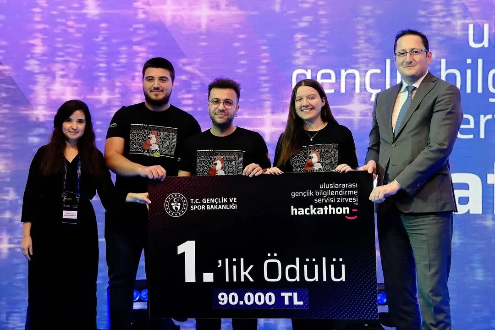
1.SoruCan · LLM ve Django geliştirici
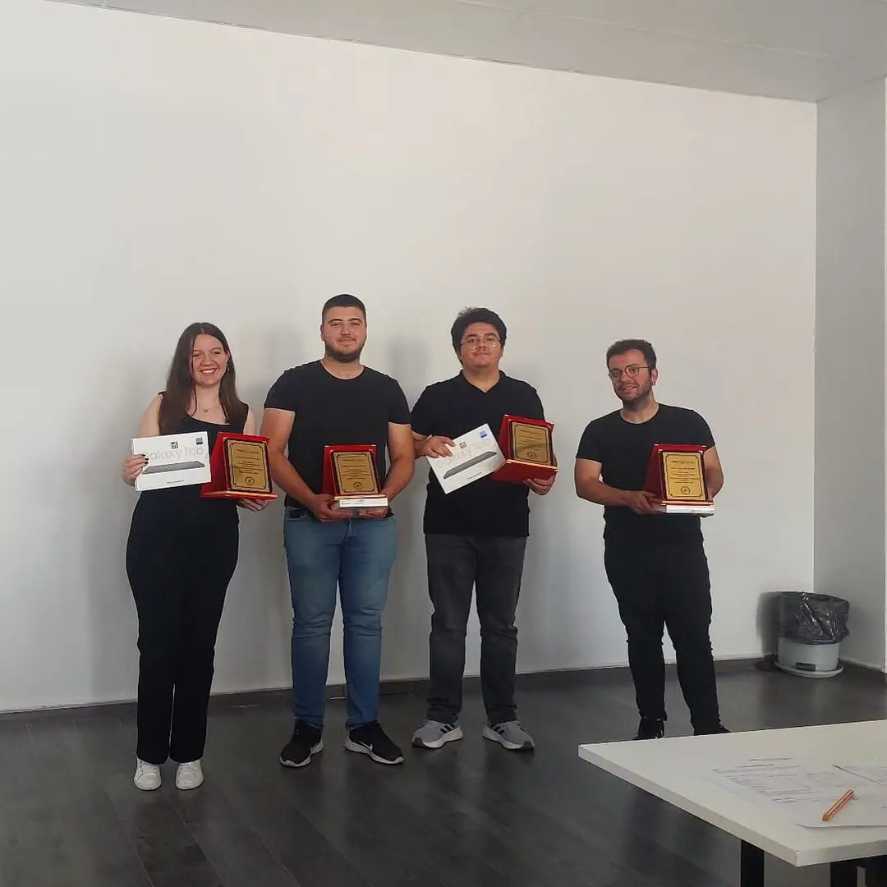
1.Yazılım geliştirici
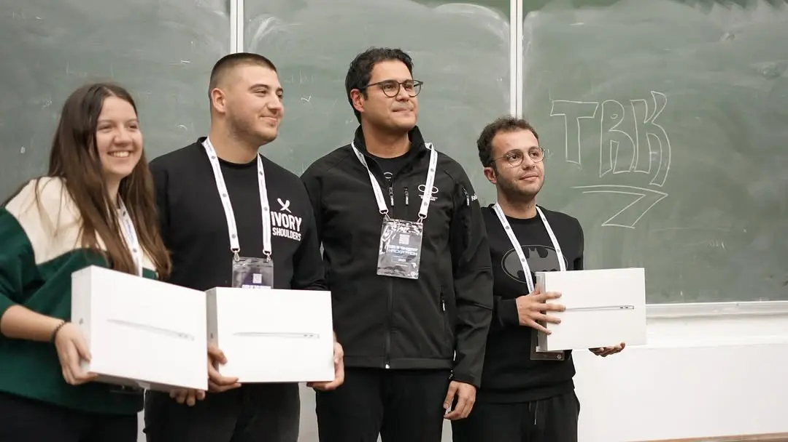
1.AsiFin · Python geliştirici
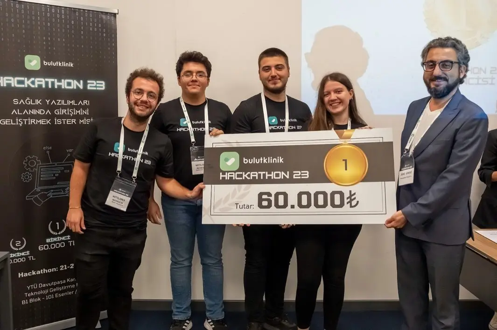
1.Asimed · Görüntü işleme ve AI geliştirici
Araç fiyat tahmin algoritması ve Generative AI teknik asistan
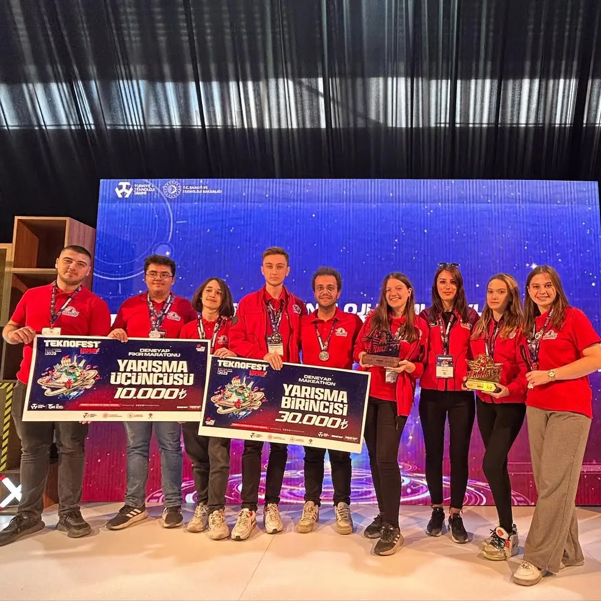
3.Kızılötesi kamera ile toplu ulaşım aracı yoğunluğu tespiti
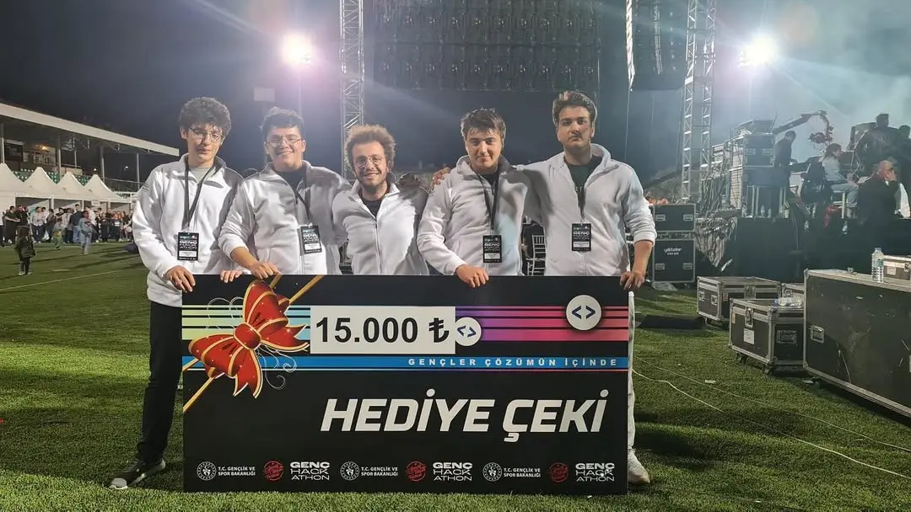
1.Kamu kurumlarının web arayüzlerinin geliştirilmesi · Backend ve ML geliştirici
İletişim